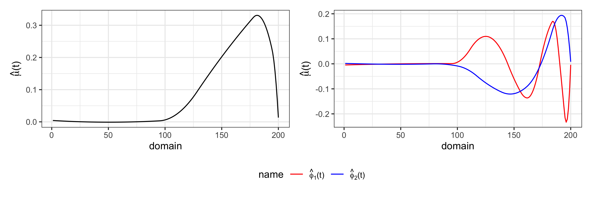
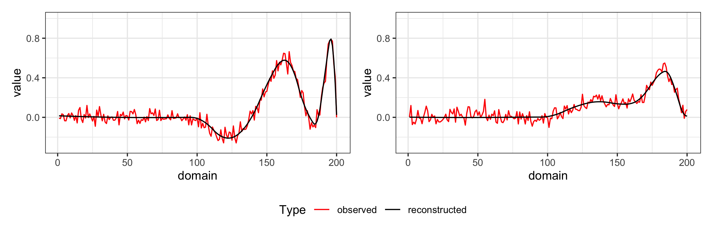

Adaptive Functional Principal Component Analysis
- Authors: Angel Garcia de la Garza, Britton Sauerbrei, Jeff Goldsmith
- License: MIT. See the LICENSE file for details
- Version: 0.9
Installation
You can install the development version of afpca from GitHub with:
install.packages("devtools")
devtools::install_github("angelgar/afpca")How to use it
These are examples of running adaptive FPCA. More details of the use of the package can be found in XYZ.
The code below uses a the function afpca::simulate_adaptive_functional_data() to simulate 20 curves Yi(t), i = 1, …, 20 observed over 200 time points on a common grid over domain (0,1) with gaussian noise. These functions are generated from a mean function and two functional principal components with varying temporal smoothness defined as:
- μ(t) = t−3/2 sin (π×t1/4)I(t>1/2)
- ϕk(t) = t−3/2 sin (4π×k×t1/4)I(t>1/2), k = 1, 2
library(afpca)
simulated_data <- simulate_adaptive_functional_data()The plot below show what this simulated data looks like:

Our software performs adaptively-smoothed functional principal component analysis. The main function in our package to do this is afpca:fpca.adapt. The code below illustrates how to do this:
afpca.output <- fpca.adapt(data = simulated_data)The plots below show the estimated mean function and functional principal components

The plots below shows two examples of observed functions and the respective reconstructions.
